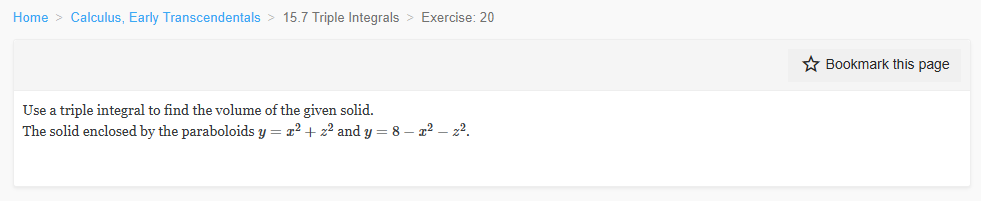

Please solve the problem in the following image.
(Image `20260928_144933_989904_utc_0800_0.png`. Alt text: Image: human_20260928_144933_989904_utc_0800)

20260928_144933_989904_utc_0800_0.png
End of problem
Answer
**Problem.** Use a triple integral to find the volume of the solid enclosed by the paraboloids
$$
y=x^2+z^2,\qquad y=8-x^2-z^2.
$$
**Step 1 — Find the intersection of the two surfaces.**
Set the two paraboloids equal:
$$
x^2+z^2=8-x^2-z^2
\;\Longrightarrow\;
2(x^2+z^2)=8
\;\Longrightarrow\;
x^2+z^2=4.
$$
So the intersection is the circle $x^2+z^2=4$ in the plane $y=4$. The solid projects onto the disk
$$
D=\{(x,z): x^2+z^2\le 4\}.
$$
The two paraboloids and their intersection circle are shown below.
---
pgfplots_0.png
---
**Step 2 — Set up the triple integral.**
For each $(x,z)\in D$, the solid lies between the lower paraboloid and the upper paraboloid:
$$
x^2+z^2 \le y \le 8-x^2-z^2.
$$
Thus, using vertical strips, the volume is the triple integral
$$
V=\iiint_E dV
=\int_{-2}^{2}\int_{-\sqrt{4-z^2}}^{\sqrt{4-z^2}}\int_{x^2+z^2}^{8-x^2-z^2} dy\,dx\,dz
=\iint_D \int_{x^2+z^2}^{8-x^2-z^2} dy\,dA.
$$
The vertical slice at $z=0$ shows the two bounding curves meeting at $(\pm 2,4)$.
---
pgfplots_1.png
---
**Step 3 — Evaluate using polar coordinates.**
Because $D$ is a disk of radius $2$, use
$$
x=r\cos\theta,\qquad z=r\sin\theta,\qquad dA=r\,dr\,d\theta,
$$
with
$$
0\le r\le 2,\qquad 0\le \theta\le 2\pi.
$$
The projection disk and a polar area element are shown below.
---